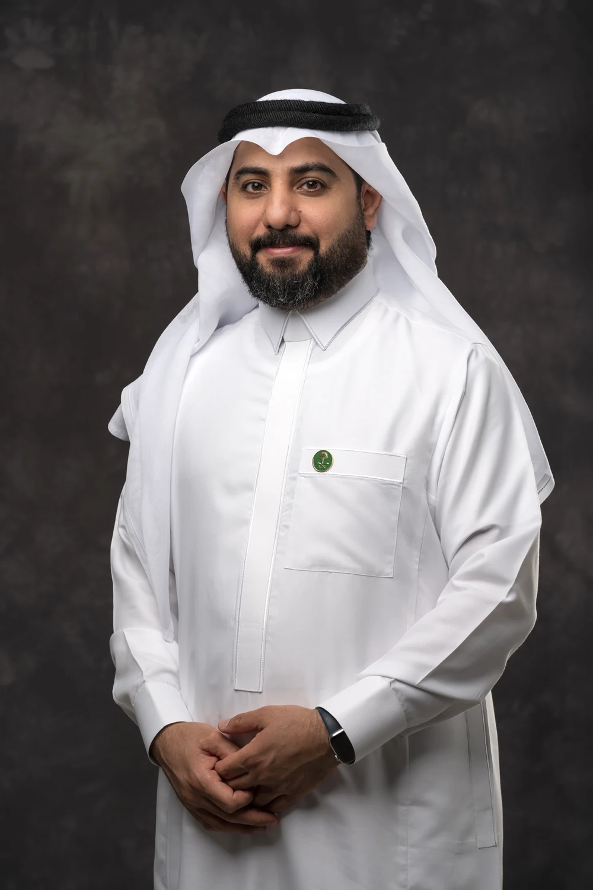

King Faisal Universityجامعة الملك فيصل
Dr. Fawaz
Khaled Alarfajالدكتور فواز
خالد العرفج
Associate Professor and Head of the Department of Management Information Systems
أستاذ مشارك ورئيس قسم نظم المعلومات الإدارية
School of Businessكلية إدارة الأعمال
I study how artificial intelligence can be applied across disciplines, with a focus on natural language processing and information retrieval.
أدرس تطبيقات الذكاء الاصطناعي في تخصصات متعددة، مع تركيز خاص على معالجة اللغات الطبيعية واسترجاع المعلومات.
